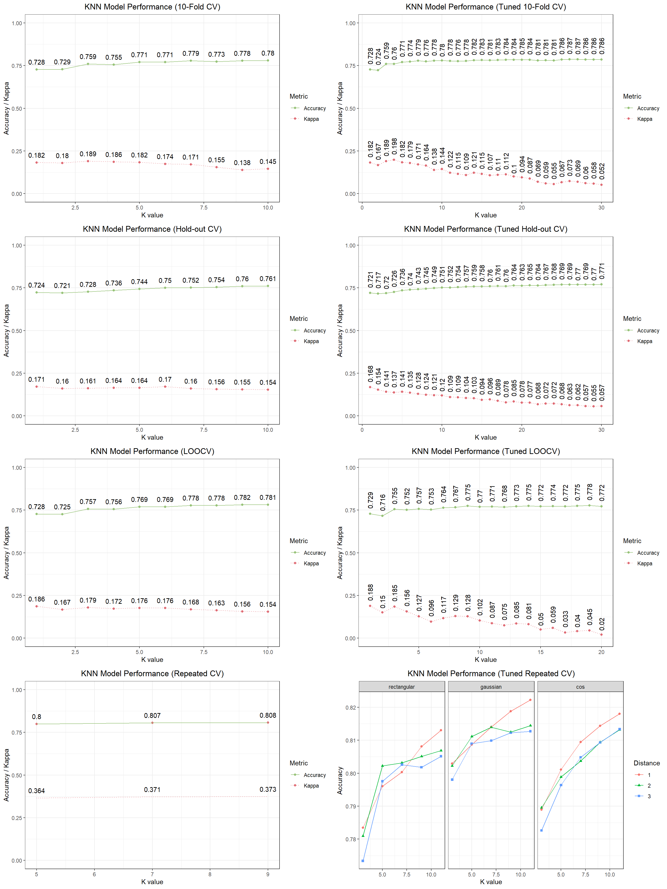
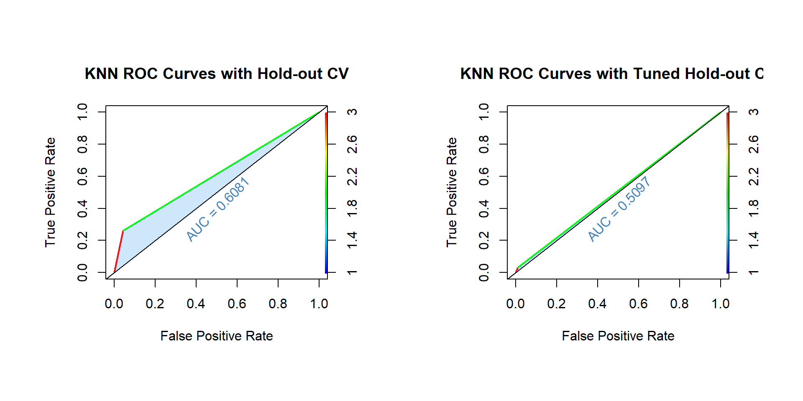

Introduction to Statistical Learning
STAT 387
Preamble
Consider the wine quality dataset from UCI Machine Learning Respository. We will focus only on the data concerning white wines (and not red wines). Dichotomize the quality variable as good, which takes the value 1 if quality ≥ 7 and the value 0, otherwise. We will take good as response and all the 11 physiochemical characteristics of the wines in the data as predictors.
Problem Statements
Use 10-fold cross-validation for estimating the test error rates below and compute the estimates using caret package with seed set to 1234 before each computation.
- Fit a KNN with K chosen optimally using test error rate. Report error rate, sensitivity, specificity, and AUC for the optimal KNN based on the training data. Also, report its estimated test error rate.
- Repeat (a) using logistic regression.
- Repeat (a) using LDA.
- Repeat (a) using QDA.
- Compare the results in (a)-(d). Which classifier would you recommend? Justify your answer.
Methodologies
- KNN
- GLM/logit/glmnet
- LDA
- QDA
- Regression/Multi-Regression
- Naive Bayes
- Decision Tree
- Classification Tree
- Regression Tree
- Classification and Regression Trees (CART)
- Iterative Dichotomiser 3 (ID3)
- C4.5
- Random Forest
- Classification
- Regression
- Bagged
- Boosted
- Gradient Boosted Trees (GBT)
- Extremely Randomized Trees (ExtraTrees)
- SVM
Data Description
This is a dataset of wine quality containing 4898 observations of 12 variables. The variables are:
fixed.acidity: The amount of fixed acid in the wine (\(g/dm^3\))volatile.acidity: The amount of volatile acid in the wine (\(g/dm^4\))citric.acid: The amount of citric acid in the wine (\(g/dm^3\))residual.sugar: The amount of residual sugar in the wine (\(g/dm^3\))chlorides: The amount of salt in the wine (\(g/dm^3\))free.sulfur.dioxide: The amount of free sulfur dioxide in the wine (\(mg/dm^3\))total.sulfur.dioxide: The amount of total sulfur dioxide in the wine (\(mg/dm^3\))density: The density of the wine (\(g/dm^3\))pH: The \(pH\) value of the winesulphates: The amount of sulphates in the wine (\(g/dm^3\))alcohol: The alcohol content of the wine (\(\% vol\))quality: The quality score of the wine (0-10)
After removing the duplicate rows from our data set, we are left with 3961 observations of the above 11 variables minus quality column variable, and introduced a new variable good as our response:
good: A binary variable indicating whether the wine is good (quality\(\geq\) 7) or not (quality\(<\) 7).
Exploratory Analysis
Data Import
Data Analysis
[1] 4898 13[1] 3961 13'data.frame': 3961 obs. of 13 variables:
$ fixed.acidity : num 7 6.3 8.1 7.2 6.2 8.1 8.1 8.6 7.9 6.6 ...
$ volatile.acidity : num 0.27 0.3 0.28 0.23 0.32 0.22 0.27 0.23 0.18 0.16 ...
$ citric.acid : num 0.36 0.34 0.4 0.32 0.16 0.43 0.41 0.4 0.37 0.4 ...
$ residual.sugar : num 20.7 1.6 6.9 8.5 7 1.5 1.45 4.2 1.2 1.5 ...
$ chlorides : num 0.045 0.049 0.05 0.058 0.045 0.044 0.033 0.035 0.04 0.044 ...
$ free.sulfur.dioxide : num 45 14 30 47 30 28 11 17 16 48 ...
$ total.sulfur.dioxide: num 170 132 97 186 136 129 63 109 75 143 ...
$ density : num 1.001 0.994 0.995 0.996 0.995 ...
$ pH : num 3 3.3 3.26 3.19 3.18 3.22 2.99 3.14 3.18 3.54 ...
$ sulphates : num 0.45 0.49 0.44 0.4 0.47 0.45 0.56 0.53 0.63 0.52 ...
$ alcohol : num 8.8 9.5 10.1 9.9 9.6 11 12 9.7 10.8 12.4 ...
$ quality : int 6 6 6 6 6 6 5 5 5 7 ...
$ good : num 0 0 0 0 0 0 0 0 0 1 ... fixed.acidity volatile.acidity citric.acid residual.sugar
Min. : 3.800 Min. :0.0800 Min. :0.0000 Min. : 0.600
1st Qu.: 6.300 1st Qu.:0.2100 1st Qu.:0.2700 1st Qu.: 1.600
Median : 6.800 Median :0.2600 Median :0.3200 Median : 4.700
Mean : 6.839 Mean :0.2805 Mean :0.3343 Mean : 5.915
3rd Qu.: 7.300 3rd Qu.:0.3300 3rd Qu.:0.3900 3rd Qu.: 8.900
Max. :14.200 Max. :1.1000 Max. :1.6600 Max. :65.800
chlorides free.sulfur.dioxide total.sulfur.dioxide density
Min. :0.00900 Min. : 2.00 Min. : 9.0 Min. :0.9871
1st Qu.:0.03500 1st Qu.: 23.00 1st Qu.:106.0 1st Qu.:0.9916
Median :0.04200 Median : 33.00 Median :133.0 Median :0.9935
Mean :0.04591 Mean : 34.89 Mean :137.2 Mean :0.9938
3rd Qu.:0.05000 3rd Qu.: 45.00 3rd Qu.:166.0 3rd Qu.:0.9957
Max. :0.34600 Max. :289.00 Max. :440.0 Max. :1.0390
pH sulphates alcohol quality
Min. :2.720 Min. :0.2200 Min. : 8.00 Min. :3.000
1st Qu.:3.090 1st Qu.:0.4100 1st Qu.: 9.50 1st Qu.:5.000
Median :3.180 Median :0.4800 Median :10.40 Median :6.000
Mean :3.195 Mean :0.4904 Mean :10.59 Mean :5.855
3rd Qu.:3.290 3rd Qu.:0.5500 3rd Qu.:11.40 3rd Qu.:6.000
Max. :3.820 Max. :1.0800 Max. :14.20 Max. :9.000
good
Min. :0.0000
1st Qu.:0.0000
Median :0.0000
Mean :0.2083
3rd Qu.:0.0000
Max. :1.0000 [1] 0
3 4 5 6 7 8 9
20 153 1175 1788 689 131 5 Data Histograms
wine.colnames <- colnames(wine.data[, 1:12])
num_plots <- length(wine.colnames)
num_rows <- ceiling(num_plots/3)
# Create an empty list to store plots
grid_arr <- list()
# Loop over each column name in the wine.colnames vector
for(i in 1:num_plots) {
# Create a ggplot object for the current column using aes
plt <- ggplot(data = wine.data, aes_string(x = wine.colnames[i])) +
geom_histogram(binwidth = diff(range(wine.data[[wine.colnames[i]]]))/30,
color = "black", fill = "slategray3") +
labs(x = wine.colnames[i], y = "Frequency") +
theme_bw()
# Add the current plot to the grid_arr list
grid_arr[[i]] <- plt
}
grid_arr <- do.call(gridExtra::grid.arrange, c(grid_arr, ncol = 3))Data Relationships
reshape2::melt(wine.data[, 1:12], "quality") %>%
ggplot(aes(value, quality, color = variable)) +
geom_point() +
geom_smooth(aes(value,quality, colour=variable), method=lm, se=FALSE)+
facet_wrap(.~variable, scales = "free")
# Collinearity between Attributes
cor(wine.data) %>%
corrplot::corrplot(method = 'number', type = "lower", tl.col = "steelblue", number.cex = 0.5)
Data Split
set.seed(123)
# Splitting the dataset into train and test (7/10th for train remaining for test)
inTrain <- caret::createDataPartition(wine.data$good, p = 7/10, list = F)
train <- wine.data[inTrain,]
test <- wine.data[-inTrain,]
# Convert the outcome variable to a factor with two levels
train$good <- as.factor(train$good)
test$good <- as.factor(test$good)Data Modeling
K-Nearest Neightbor
Model Construction
#--------------------#
#-----K-fold CV------#
#--------------------#
set.seed(1234)
# Define the training control object for 10-fold cross-validation
train_control <- trainControl(method = "cv", number = 10)
# Train the KNN model using 10-fold cross-validation
# tuneLength argument to specify the range of values of K to be considered for tuning
set.seed(1234)
knn_model <- train(good ~ .,
data = train,
method = "knn",
trControl = train_control)
# Save the model into .Rdata for future import
save(knn_model, file = "dataset\\knn.model_kfoldCV.Rdata")
#--------------------------#
#-----K-fold CV (Mod)------#
#--------------------------#
set.seed(1234)
train_control <- trainControl(method = "cv", number = 10)
set.seed(1234)
knn_model <- train(good ~ .,
data = train,
method = "knn",
trControl = train_control,
tuneLength = 10)
# Save the model into .Rdata for future import
save(knn_model, file = "dataset\\knn.model_kfoldCV_mod.Rdata")
#--------------------#
#----Hold-out CV-----#
#--------------------#
set.seed(1234)
train_control <- trainControl(method = "none",)
set.seed(1234)
knn_model <- train(good ~ .,
data = train,
method = "knn")
save(knn_model, file = "dataset\\knn.model_holdoutCV.Rdata")
#--------------------------#
#----Hold-out CV (Mod)-----#
#--------------------------#
set.seed(1234)
train_control <- trainControl(method = "none",)
set.seed(1234)
knn_model <- train(good ~ .,
data = train,
method = "knn",
tuneGrid = expand.grid(k=1:30))
save(knn_model, file = "dataset\\knn.model_holdoutCV_mod.Rdata")
#--------------------#
#-------LOOCV--------#
#--------------------#
set.seed(1234)
train_control <- trainControl(method = "LOOCV")
set.seed(1234)
knn_model <- train(good ~ .,
data = train,
method = "knn",
trControl = train_control)
save(knn_model, file = "dataset\\knn.model_looCV.Rdata")
#--------------------------#
#-------LOOCV (Mod)--------#
#--------------------------#
set.seed(1234)
train_control <- trainControl(method = "LOOCV")
set.seed(1234)
knn_model <- train(good ~ .,
data = train,
method = "knn",
trControl = train_control,
tuneLength = 10,
tuneGrid = expand.grid(k = 1:20))
save(knn_model, file = "dataset\\knn.model_looCV_mod.Rdata")
#--------------------#
#----Repeated CV-----#
#--------------------#
set.seed(1234)
train_control <- trainControl(method = "repeatedcv", number = 10, repeats = 5)
set.seed(1234)
knn_model <- train(good ~ .,
data = train,
method = "knn",
trControl = train_control)
save(knn_model, file = "dataset\\knn.model_repeatedCV.Rdata")
#--------------------------#
#----Repeated CV (Mod)-----#
#--------------------------#
set.seed(1234)
train_control <- trainControl(method = "repeatedcv", number = 10, repeats = 5)
kknn.grid <- expand.grid(kmax = c(3, 5, 7 ,9, 11), distance = c(1, 2, 3),
kernel = c("rectangular", "gaussian", "cos"))
set.seed(1234)
knn_model <- train(good ~ .,
data = train,
method = "kknn",
trControl = train_control,
tuneGrid = kknn.grid,
preProcess = c("center", "scale"))
save(knn_model, file = "dataset\\knn.model_repeatedCV_mod.Rdata")K-fold CV
# Import model
load("dataset\\knn.model_kfoldCV.Rdata")
# Make predictions on the test data using the trained model and calculate the test error rate
knn.predictions <- predict(knn_model, newdata = test)
confusionMatrix(knn.predictions, test$good)Confusion Matrix and Statistics
Reference
Prediction 0 1
0 903 164
1 58 63
Accuracy : 0.8131
95% CI : (0.7898, 0.8349)
No Information Rate : 0.8089
P-Value [Acc > NIR] : 0.3725
Kappa : 0.2643
Mcnemar's Test P-Value : 1.826e-12
Sensitivity : 0.9396
Specificity : 0.2775
Pos Pred Value : 0.8463
Neg Pred Value : 0.5207
Prevalence : 0.8089
Detection Rate : 0.7601
Detection Prevalence : 0.8981
Balanced Accuracy : 0.6086
'Positive' Class : 0
# Convert predictions to a numeric vector
knn.predictions <- as.numeric(knn.predictions)
# Calculate the AUC using the performance() and auc() functions:
pred_obj <- prediction(knn.predictions, test$good)
auc_val <- performance(pred_obj, "auc")@y.values[[1]]
auc_val[1] 0.6085896# Performance plot for TP and FP
roc_obj <- performance(pred_obj, "tpr", "fpr")
plot(roc_obj, colorize = TRUE, lwd = 2,
xlab = "False Positive Rate",
ylab = "True Positive Rate",
main = "ROC Curves from 10-fold CV")
points(auc_val, 1 - auc_val,
col = "steelblue",
pch = 21)
abline(a = 0, b = 1)knn.kfoldCV.ROC.plot<- recordPlot()
# Accuracy and Kappa value plot
knn.accu.kappa.plot <- function(knn.model) {
p <- ggplot(data=data.frame(k = knn.model$results$k,
Accuracy = knn.model$results$Accuracy,
Kappa = knn.model$results$Kappa)) +
geom_point(aes(x = k, y = Accuracy, color = "Accuracy")) +
geom_point(aes(x = k, y = Kappa, color = "Kappa")) +
geom_line(aes(x = k, y = Accuracy, linetype = "Accuracy", color = "Accuracy")) +
geom_line(aes(x = k, y = Kappa, linetype = "Kappa", color = "Kappa")) +
scale_color_manual(values = c("#98c379", "#e06c75"),
guide = guide_legend(override.aes = list(linetype = c(1, 0)) )) +
scale_linetype_manual(values=c("solid", "dotted"),
guide = guide_legend(override.aes = list(color = c("#98c379", "#e06c75")))) +
labs(x = "K value",
y = "Accuracy / Kappa") +
ylim(0, 1) +
theme_bw() +
theme(plot.title = element_text(hjust = 0.5)) +
guides(color = guide_legend(title = "Metric"),
linetype = guide_legend(title = "Metric"))
return(p)
}
knn.kfoldCV.plot <- knn.accu.kappa.plot(knn_model) +
geom_text(aes(x = k, y = Accuracy, label = round(Accuracy, 3)), vjust = -1) +
geom_text(aes(x = k, y = Kappa, label = round(Kappa, 3)), vjust = -1) +
ggtitle("KNN Model Performance (10-Fold CV)")Tuned
load("dataset\\knn.model_kfoldCV_mod.Rdata")
knn.predictions <- predict(knn_model, newdata = test)
confusionMatrix(knn.predictions, test$good)Confusion Matrix and Statistics
Reference
Prediction 0 1
0 935 208
1 26 19
Accuracy : 0.803
95% CI : (0.7793, 0.8253)
No Information Rate : 0.8089
P-Value [Acc > NIR] : 0.7118
Kappa : 0.0816
Mcnemar's Test P-Value : <2e-16
Sensitivity : 0.9729
Specificity : 0.0837
Pos Pred Value : 0.8180
Neg Pred Value : 0.4222
Prevalence : 0.8089
Detection Rate : 0.7870
Detection Prevalence : 0.9621
Balanced Accuracy : 0.5283
'Positive' Class : 0
knn.predictions <- as.numeric(knn.predictions)
pred_obj <- prediction(knn.predictions, test$good)
auc_val <- performance(pred_obj, "auc")@y.values[[1]]
auc_val[1] 0.5283226Hold-out CV
load("dataset\\knn.model_holdoutCV.Rdata")
knn.predictions <- predict(knn_model, newdata = test)
confusionMatrix(knn.predictions, test$good)Confusion Matrix and Statistics
Reference
Prediction 0 1
0 911 174
1 50 53
Accuracy : 0.8114
95% CI : (0.788, 0.8333)
No Information Rate : 0.8089
P-Value [Acc > NIR] : 0.4297
Kappa : 0.2293
Mcnemar's Test P-Value : <2e-16
Sensitivity : 0.9480
Specificity : 0.2335
Pos Pred Value : 0.8396
Neg Pred Value : 0.5146
Prevalence : 0.8089
Detection Rate : 0.7668
Detection Prevalence : 0.9133
Balanced Accuracy : 0.5907
'Positive' Class : 0
knn.predictions <- as.numeric(knn.predictions)
pred_obj <- prediction(knn.predictions, test$good)
auc_val <- performance(pred_obj, "auc")@y.values[[1]]
auc_val[1] 0.5907255Tuned
load("dataset\\knn.model_holdoutCV_mod.Rdata")
knn.predictions <- predict(knn_model, newdata = test)
confusionMatrix(knn.predictions, test$good)Confusion Matrix and Statistics
Reference
Prediction 0 1
0 952 219
1 9 8
Accuracy : 0.8081
95% CI : (0.7845, 0.8301)
No Information Rate : 0.8089
P-Value [Acc > NIR] : 0.547
Kappa : 0.04
Mcnemar's Test P-Value : <2e-16
Sensitivity : 0.99063
Specificity : 0.03524
Pos Pred Value : 0.81298
Neg Pred Value : 0.47059
Prevalence : 0.80892
Detection Rate : 0.80135
Detection Prevalence : 0.98569
Balanced Accuracy : 0.51294
'Positive' Class : 0
knn.predictions <- as.numeric(knn.predictions)
pred_obj <- prediction(knn.predictions, test$good)
auc_val <- performance(pred_obj, "auc")@y.values[[1]]
auc_val[1] 0.5129385roc_obj <- performance(pred_obj, "tpr", "fpr")
plot(roc_obj, colorize = TRUE, lwd = 2,
xlab = "False Positive Rate",
ylab = "True Positive Rate",
main = "ROC Curves from Tuned Hold-out CV")
points(auc_val, 1 - auc_val,
col = "steelblue",
pch = 21)
abline(a = 0, b = 1)knn.holdoutCV_mod.ROC.plot <- recordPlot()
knn.holdoutCV_mod.plot <- knn.accu.kappa.plot(knn_model) +
geom_text(aes(x = k, y = Accuracy, label = round(Accuracy, 3)), hjust = -0.3, angle=90) +
geom_text(aes(x = k, y = Kappa, label = round(Kappa, 3)), hjust=-0.3, angle=90) +
ggtitle("KNN Model Performance (Tuned Hold-out CV)")LOOCV
load("dataset\\knn.model_looCV.Rdata")
knn.predictions <- predict(knn_model, newdata = test)
confusionMatrix(knn.predictions, test$good)Confusion Matrix and Statistics
Reference
Prediction 0 1
0 921 171
1 40 56
Accuracy : 0.8224
95% CI : (0.7994, 0.8437)
No Information Rate : 0.8089
P-Value [Acc > NIR] : 0.1258
Kappa : 0.263
Mcnemar's Test P-Value : <2e-16
Sensitivity : 0.9584
Specificity : 0.2467
Pos Pred Value : 0.8434
Neg Pred Value : 0.5833
Prevalence : 0.8089
Detection Rate : 0.7753
Detection Prevalence : 0.9192
Balanced Accuracy : 0.6025
'Positive' Class : 0
knn.predictions <- as.numeric(knn.predictions)
pred_obj <- prediction(knn.predictions, test$good)
auc_val <- performance(pred_obj, "auc")@y.values[[1]]
auc_val[1] 0.6025364Tuned
load("dataset\\knn.model_looCV_mod.Rdata")
knn.predictions <- predict(knn_model, newdata = test)
confusionMatrix(knn.predictions, test$good)Confusion Matrix and Statistics
Reference
Prediction 0 1
0 935 208
1 26 19
Accuracy : 0.803
95% CI : (0.7793, 0.8253)
No Information Rate : 0.8089
P-Value [Acc > NIR] : 0.7118
Kappa : 0.0816
Mcnemar's Test P-Value : <2e-16
Sensitivity : 0.9729
Specificity : 0.0837
Pos Pred Value : 0.8180
Neg Pred Value : 0.4222
Prevalence : 0.8089
Detection Rate : 0.7870
Detection Prevalence : 0.9621
Balanced Accuracy : 0.5283
'Positive' Class : 0
knn.predictions <- as.numeric(knn.predictions)
pred_obj <- prediction(knn.predictions, test$good)
auc_val <- performance(pred_obj, "auc")@y.values[[1]]
auc_val[1] 0.5283226roc_obj <- performance(pred_obj, "tpr", "fpr")
plot(roc_obj, colorize = TRUE, lwd = 2,
xlab = "False Positive Rate",
ylab = "True Positive Rate",
main = "ROC Curves from Tuned LOOCV")
points(auc_val, 1 - auc_val,
col = "steelblue",
pch = 21)
abline(a = 0, b = 1)knn.looCV_mod.ROC.plot <- recordPlot()
knn.looCV_mod.plot <- knn.accu.kappa.plot(knn_model) +
geom_text(aes(x = k, y = Accuracy, label = round(Accuracy, 3)), hjust = -0.3, angle=90) +
geom_text(aes(x = k, y = Kappa, label = round(Kappa, 3)), hjust = -0.3, angle=90) +
ggtitle("KNN Model Performance (Tuned LOOCV)")Repeated CV
load("dataset\\knn.model_repeatedCV.Rdata")
knn.predictions <- predict(knn_model, newdata = test)
confusionMatrix(knn.predictions, test$good)Confusion Matrix and Statistics
Reference
Prediction 0 1
0 917 83
1 44 144
Accuracy : 0.8931
95% CI : (0.8741, 0.9101)
No Information Rate : 0.8089
P-Value [Acc > NIR] : 1.966e-15
Kappa : 0.6299
Mcnemar's Test P-Value : 0.0007464
Sensitivity : 0.9542
Specificity : 0.6344
Pos Pred Value : 0.9170
Neg Pred Value : 0.7660
Prevalence : 0.8089
Detection Rate : 0.7719
Detection Prevalence : 0.8418
Balanced Accuracy : 0.7943
'Positive' Class : 0
knn.predictions <- as.numeric(knn.predictions)
pred_obj <- prediction(knn.predictions, test$good)
auc_val <- performance(pred_obj, "auc")@y.values[[1]]
auc_val[1] 0.7942878roc_obj <- performance(pred_obj, "tpr", "fpr")
plot(roc_obj, colorize = TRUE, lwd = 2,
xlab = "False Positive Rate",
ylab = "True Positive Rate",
main = "ROC Curves from Repeated CV")
points(auc_val, 1 - auc_val,
col = "steelblue",
pch = 21)
abline(a = 0, b = 1)knn.repeatedCV.ROC.plot <- recordPlot()
df <- knn_model$results
knn.repeatedCV.plot <- ggplot(data=df, aes(x = kmax, y = Accuracy)) +
geom_point(aes(color = "Accuracy")) +
geom_point(aes(color = "Kappa")) +
geom_line(aes(linetype = "Accuracy", color = "Accuracy")) +
geom_line(aes(y = Kappa, linetype = "Kappa", color = "Kappa")) +
geom_text(aes(label = round(Accuracy, 3)), vjust = -1) +
geom_text(aes(y = Kappa, label = round(Kappa, 3)), vjust = -1) +
scale_color_manual(values = c("#98c379", "#e06c75"),
guide = guide_legend(override.aes = list(linetype = c(1, 0)) )) +
scale_linetype_manual(values=c("solid", "dotted"),
guide = guide_legend(override.aes = list(color = c("#98c379", "#e06c75")))) +
labs(x = "K value",
y = "Accuracy / Kappa",
title = "KNN Model Performance (Repeated CV)") +
ylim(0, 1) +
theme_bw() +
theme(plot.title = element_text(hjust = 0.5)) +
guides(color = guide_legend(title = "Metric"),
linetype = guide_legend(title = "Metric"))Tuned
load("dataset\\knn.model_repeatedCV_mod.Rdata")
knn.predictions <- predict(knn_model, newdata = test)
confusionMatrix(knn.predictions, test$good)Confusion Matrix and Statistics
Reference
Prediction 0 1
0 921 103
1 40 124
Accuracy : 0.8796
95% CI : (0.8598, 0.8976)
No Information Rate : 0.8089
P-Value [Acc > NIR] : 3.875e-11
Kappa : 0.5645
Mcnemar's Test P-Value : 2.164e-07
Sensitivity : 0.9584
Specificity : 0.5463
Pos Pred Value : 0.8994
Neg Pred Value : 0.7561
Prevalence : 0.8089
Detection Rate : 0.7753
Detection Prevalence : 0.8620
Balanced Accuracy : 0.7523
'Positive' Class : 0
knn.predictions <- as.numeric(knn.predictions)
pred_obj <- prediction(knn.predictions, test$good)
auc_val <- performance(pred_obj, "auc")@y.values[[1]]
auc_val[1] 0.7523161Summary
ggarrange(knn.kfoldCV.plot,
knn.kfoldCV_mod.plot,
knn.holdoutCV.plot,
knn.holdoutCV_mod.plot,
knn.looCV.plot,
knn.looCV_mod.plot,
knn.repeatedCV.plot,
knn.repeatedCV_mod.plot,
ncol = 2, nrow = 4)
cowplot::plot_grid(knn.kfoldCV.ROC.plot, knn.kfoldCV_mod.ROC.plot,
ncol = 2, align = "hv", scale = 0.8)cowplot::plot_grid(knn.holdoutCV.ROC.plot, knn.holdoutCV_mod.ROC.plot,
ncol = 2, align = "hv", scale = 0.8)
cowplot::plot_grid(knn.repeatedCV.ROC.plot, knn.repeatedCV_mod.ROC.plot,
ncol = 2, align = "hv", scale = 0.8)
| Resampling Method | Error Rate | Sensitivity | Specificity | AUC |
|---|---|---|---|---|
| K-Fold CV | 0.2273 | 0.9199 | 0.1883 | 0.5541001 |
| K-Fold CV (Tuned) | 0.1995 | 0.9768 | 0.1004 | 0.5386181 |
| Hold-out CV | 0.2222 | 0.9336 | 0.1590 | 0.5463051 |
| Hold-out CV (Tuned) | 0.2022 | 0.9926 | 0.0251 | 0.5088642 |
| LOOCV | 0.1717 | 0.9642 | 0.2887 | 0.6264379 |
| LOOCV (Tuned) | 0.1995 | 0.9768 | 0.1004 | 0.5386181 |
| Repeated CV | 0.1776 | 0.9104 | 0.4728 | 0.6916177 |
| Repeated CV (Tuned) | 0.1120 | 0.9547 | 0.6234 | 0.7890601 |
Logistic Regression
Model Construction
#----------------------------#
#----Logistic Regression-----#
#----------------------------#
set.seed(1234)
# Define the training control object for 10-fold cross-validation
train_control <- trainControl(method = "cv", number = 10)
# Train the logistic regression model using 10-fold cross-validation
set.seed(1234)
logit_model <- train(good ~ .,
data = train,
method = "glm",
family = "binomial",
trControl = train_control)
save(logit_model, file = "dataset\\logit.model_kfoldCV.Rdata")
#----------------------------------#
#----Logistic Regression (Mod)-----#
#----------------------------------#K-fold CV
load("dataset\\logit.model_kfoldCV.Rdata")
logit.predictions <- predict(logit_model, newdata = test)
confusionMatrix(logit.predictions, test$good)Confusion Matrix and Statistics
Reference
Prediction 0 1
0 899 154
1 62 73
Accuracy : 0.8182
95% CI : (0.7951, 0.8397)
No Information Rate : 0.8089
P-Value [Acc > NIR] : 0.2201
Kappa : 0.3041
Mcnemar's Test P-Value : 5.949e-10
Sensitivity : 0.9355
Specificity : 0.3216
Pos Pred Value : 0.8538
Neg Pred Value : 0.5407
Prevalence : 0.8089
Detection Rate : 0.7567
Detection Prevalence : 0.8864
Balanced Accuracy : 0.6285
'Positive' Class : 0
logit.predictions <- as.numeric(logit.predictions)
pred_obj <- prediction(logit.predictions, test$good)
auc_val <- performance(pred_obj, "auc")@y.values[[1]]
auc_val[1] 0.6285349Tuned
glm.model <- glm(good ~ ., data= train,family="binomial")
glm.fit= stepAIC(glm.model, direction = 'backward')Start: AIC=2263
good ~ fixed.acidity + volatile.acidity + citric.acid + residual.sugar +
chlorides + free.sulfur.dioxide + total.sulfur.dioxide +
density + pH + sulphates + alcohol
Df Deviance AIC
- citric.acid 1 2240.1 2262.1
<none> 2239.0 2263.0
- alcohol 1 2241.3 2263.3
- total.sulfur.dioxide 1 2243.0 2265.0
- chlorides 1 2252.2 2274.2
- volatile.acidity 1 2254.3 2276.3
- sulphates 1 2256.6 2278.6
- free.sulfur.dioxide 1 2258.1 2280.1
- fixed.acidity 1 2258.6 2280.6
- density 1 2263.2 2285.2
- residual.sugar 1 2266.6 2288.6
- pH 1 2295.8 2317.8
Step: AIC=2262.05
good ~ fixed.acidity + volatile.acidity + residual.sugar + chlorides +
free.sulfur.dioxide + total.sulfur.dioxide + density + pH +
sulphates + alcohol
Df Deviance AIC
<none> 2240.1 2262.1
- alcohol 1 2242.7 2262.7
- total.sulfur.dioxide 1 2243.7 2263.7
- chlorides 1 2252.8 2272.8
- sulphates 1 2257.9 2277.9
- volatile.acidity 1 2258.4 2278.4
- free.sulfur.dioxide 1 2258.8 2278.8
- fixed.acidity 1 2261.2 2281.2
- density 1 2263.7 2283.7
- residual.sugar 1 2267.2 2287.2
- pH 1 2296.2 2316.2# Make predictions on test data and construct a confusion matrix
logit.predictions <- predict(glm.fit, newdata = test,type = "response")
logit.predictions <- factor(ifelse(logit.predictions > 0.7, 1, 0),
levels = c(0, 1))
confusionMatrix(logit.predictions, test$good)Confusion Matrix and Statistics
Reference
Prediction 0 1
0 954 207
1 7 20
Accuracy : 0.8199
95% CI : (0.7968, 0.8413)
No Information Rate : 0.8089
P-Value [Acc > NIR] : 0.1784
Kappa : 0.1218
Mcnemar's Test P-Value : <2e-16
Sensitivity : 0.99272
Specificity : 0.08811
Pos Pred Value : 0.82171
Neg Pred Value : 0.74074
Prevalence : 0.80892
Detection Rate : 0.80303
Detection Prevalence : 0.97727
Balanced Accuracy : 0.54041
'Positive' Class : 0
logit.predictions <- as.numeric(logit.predictions)
pred_obj <- prediction(logit.predictions, test$good)
auc_val <- performance(pred_obj, "auc")@y.values[[1]]
auc_val[1] 0.5404108roc_obj <- performance(pred_obj, "tpr", "fpr")
plot(roc_obj, colorize = TRUE, lwd = 2,
xlab = "False Positive Rate",
ylab = "True Positive Rate",
main = "ROC Curves from Repeated CV")
points(auc_val, 1 - auc_val,
col = "steelblue",
pch = 21)
abline(a = 0, b = 1)
| Resampling Method | Error Rate | Sensitivity | Specificity | AUC |
|---|---|---|---|---|
| Logistic Regression | 0.1944 | 0.9347 | 0.2929 | 0.6137776 |
| Logistic Regression (Tuned) | 0.1919 | 0.98946 | 0.08787 | 0.5386644 |
Linear Discriminant Analysis
Model Construction
#------------#
#----LDA-----#
#------------#
set.seed(1234)
train_control <- trainControl(method = "cv", number = 10)
set.seed(1234)
lda_model <- train(good ~ .,
data = train,
method = "lda",
trControl = train_control)
save(lda_model, file = "dataset\\lda.model_kfoldCV.Rdata")
#------------------#
#----LDA (Mod)-----#
#------------------#K-fold CV
load("dataset\\lda.model_kfoldCV.Rdata")
lda.predictions <- predict(lda_model, newdata = test)
confusionMatrix(lda.predictions, test$good)Confusion Matrix and Statistics
Reference
Prediction 0 1
0 889 144
1 72 83
Accuracy : 0.8182
95% CI : (0.7951, 0.8397)
No Information Rate : 0.8089
P-Value [Acc > NIR] : 0.2201
Kappa : 0.3308
Mcnemar's Test P-Value : 1.359e-06
Sensitivity : 0.9251
Specificity : 0.3656
Pos Pred Value : 0.8606
Neg Pred Value : 0.5355
Prevalence : 0.8089
Detection Rate : 0.7483
Detection Prevalence : 0.8695
Balanced Accuracy : 0.6454
'Positive' Class : 0
lda.predictions <- as.numeric(lda.predictions)
pred_obj <- prediction(lda.predictions, test$good)
auc_val <- performance(pred_obj, "auc")@y.values[[1]]
auc_val[1] 0.6453584Tuned
| Resampling Method | Error Rate | Sensitivity | Specificity | AUC |
|---|---|---|---|---|
| LDA | 0.1919 | 0.9283 | 0.3305 | 0.6294448 |
| LDA (Tuned) | 0.xxxx | 0.xxxx | 0.xxxx | 0.xxxxxxx |
Quadratic discriminant analysis
Model Construction
#------------#
#----QDA-----#
#------------#
set.seed(1234)
train_control <- trainControl(method = "cv", number = 10)
set.seed(1234)
qda_model <- train(good ~ .,
data = train,
method = "qda",
trControl = train_control)
save(qda_model, file = "dataset\\qda.model_kfoldCV.Rdata")
#------------------#
#----QDA (Mod)-----#
#------------------#K-fold CV
load("dataset\\qda.model_kfoldCV.Rdata")
qda.predictions <- predict(qda_model, newdata = test)
confusionMatrix(qda.predictions, test$good)Confusion Matrix and Statistics
Reference
Prediction 0 1
0 710 52
1 251 175
Accuracy : 0.7449
95% CI : (0.7192, 0.7695)
No Information Rate : 0.8089
P-Value [Acc > NIR] : 1
Kappa : 0.3819
Mcnemar's Test P-Value : <2e-16
Sensitivity : 0.7388
Specificity : 0.7709
Pos Pred Value : 0.9318
Neg Pred Value : 0.4108
Prevalence : 0.8089
Detection Rate : 0.5976
Detection Prevalence : 0.6414
Balanced Accuracy : 0.7549
'Positive' Class : 0
qda.predictions <- as.numeric(qda.predictions)
pred_obj <- prediction(qda.predictions, test$good)
auc_val <- performance(pred_obj, "auc")@y.values[[1]]
auc_val[1] 0.7548694Tuned
| Resampling Method | Error Rate | Sensitivity | Specificity | AUC |
|---|---|---|---|---|
| QDA | 0.2559 | 0.7418 | 0.7531 | 0.7474858 |
| QDA (Tuned) | 0.xxxx | 0.xxxx | 0.xxxx | 0.xxxxxxx |
Summary
cowplot::plot_grid(knn.kfoldCV.ROC.plot,
logit.kfoldCV.ROC.plot,
lda.kfoldCV.ROC.plot,
qda.kfoldCV.ROC.plot,
ncol = 2, align = "hv", scale = 0.8)
| Resampling Method | Error Rate | Sensitivity | Specificity | AUC |
|---|---|---|---|---|
| Logistic Regression | 0.1944 | 0.9347 | 0.2929 | 0.6137776 |
| Logistic Regression (Tuned) | 0.1919 | 0.98946 | 0.08787 | 0.5386644 |
| LDA | 0.1919 | 0.9283 | 0.3305 | 0.6294448 |
| LDA (Tuned) | 0.xxxx | 0.xxxx | 0.xxxx | 0.xxxxxxx |
| QDA | 0.2559 | 0.7418 | 0.7531 | 0.7474858 |
| QDA (Tuned) | 0.xxxx | 0.xxxx | 0.xxxx | 0.xxxxxxx |